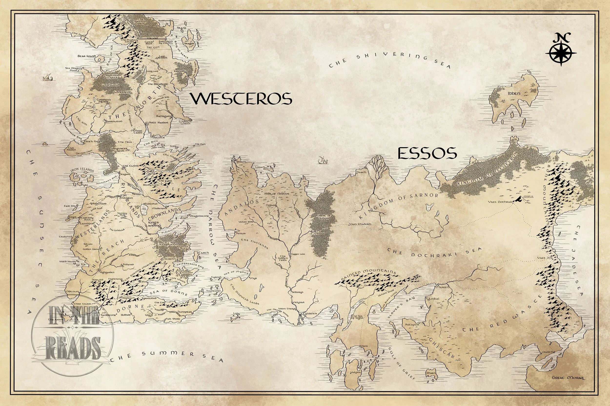

Interactive experience
Interactive Map of Westeros & Essos
Click each kingdom, city, and landmark to read its story — and hear the echoes of battle.

Interactive experience
Click each kingdom, city, and landmark to read its story — and hear the echoes of battle.
